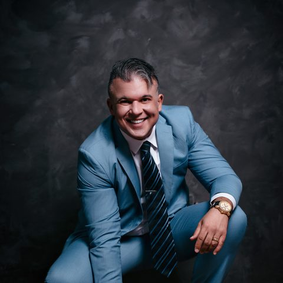

Da ideia ao primeiro criadouro profissional.
Ao final da formação, você terá o projeto completo do seu criadouro: a raça escolhida com critério, quanto vai custar, o que precisa comprar, como montar a estrutura, como formar o plantel, como vender e como se proteger — começando do zero já blindado, antes de gastar o primeiro real errado.
Se você marcou pelo menos um item, continue lendo. O que vem a seguir pode te poupar muito dinheiro.
Ele perde dinheiro antes — comprando a matriz errada, montando uma estrutura que não serve, escolhendo uma raça que não vende na região dele e vendendo o primeiro filhote sem contrato nenhum.
Pedigree que não confere, doença na linhagem, animal que não reproduz. É a decisão mais cara do começo — e a mais fácil de errar no impulso.
Sem maternidade, sem isolamento, em local onde a atividade nem é permitida. Obra refeita é dinheiro jogado fora duas vezes.
Escolher só pela paixão, sem medir a procura na sua região. Ninhada parada é custo que não para de correr.
O comprador volta meses depois dizendo que o filhote "já veio doente". Sem prova e sem contrato, quem paga a conta é você.
A JurisDog conhece esses erros de perto porque atende todos os dias o criador que começou errado. Por isso criamos o Criador Faixa Preta: para você começar certo.
A maioria faz na ordem errada: primeiro constrói, depois descobre as regras. Quando a fiscalização chega, a obra já está pronta, os animais já estão lá — e cada correção vira um novo gasto.
Constrói o canil ou gatil no impulsoSem saber se a atividade é permitida naquele local nem quais exigências valem no seu Estado e município.
Compra as matrizes e começa a criarO dinheiro guardado já foi quase todo para a obra e para os animais.
Chega a denúncia ou a fiscalizaçãoVizinho reclama, um órgão aparece — e a documentação não existe.
Notificação, multa, interdição ou embargoA atividade pode ser paralisada até tudo ser corrigido.
Obra refeita, ninhadas paradas, animais sem lugarE a conta continua chegando enquanto nada é vendido.
Antes de qualquer obra, confere o local e as regrasVocê sabe o que vale para a sua cidade e o seu Estado antes de gastar.
Projeta a estrutura já dentro das exigênciasMaternidade, isolamento, higiene e bem-estar pensados uma única vez — sem refazer.
Organiza documentos e cadastros desde o começoO kit documental do criadouro fica pronto antes do primeiro animal chegar.
Vende com contrato, garantia e pós-vendaCada filhote sai protegido, com prova de como foi entregue.
Se a fiscalização chegar, você está prontoDocumentação em ordem para apresentar — sem susto e sem improviso.
As exigências variam de Estado para Estado e de município para município. Na formação você aprende a identificar as que valem para o seu caso — e, quando precisar, tem a equipe jurídica da JurisDog ao seu lado.
Quando é feita com planejamento, a criação de animais de raça deixa de ser aposta e passa a ser uma empresa que você entende, controla e faz crescer.
Você trabalha com o que ama, no seu espaço, construindo algo que é seu — e não de um patrão.
Criadouro com reputação vende com fila de espera e escolhe o comprador. Marca forte é o que define o seu preço.
Você sabe quanto investiu, quanto custa cada ninhada e quanto precisa cobrar. Nada de "achismo".
Contrato, garantia, prova e pós-venda organizados desde o primeiro filhote. Você vende tranquilo.
Estrutura e plantel pensados para crescer sem travar — e sem refazer tudo no segundo ano.
Quando o criadouro crescer, a mesma equipe que te ensinou continua do seu lado para te proteger.

Há mais de 10 anos, o Dr. Thiago e a equipe da JurisDog assessoram criadores de cães e gatos em todo o Brasil. Mais de 4.000 criadouros analisados. A JurisDog não ensina teoria: resolve, todos os dias, o problema do criador que começou errado.
É essa experiência — de quem vê o erro virar prejuízo, fiscalização e processo — que está dentro do Criador Faixa Preta. Você aprende com a consequência que os outros já pagaram.
Seis pilares, na mesma ordem de quem abre uma empresa do zero. Você não sai sabendo só reproduzir — sai sabendo operar.
Entender o negócio de verdade e escolher a raça com critério.
Módulos 1 e 2Quanto custa, viabilidade do primeiro ano e estrutura física.
Módulos 3 e 4Formar o plantel sem errar na primeira matriz.
Módulo 5Da cobertura ao nascimento e ao desenvolvimento da ninhada.
Módulos 6 e 7Contrato, garantia, prova e pós-venda. O pilar que só a JurisDog tem.
Módulo 8Marca, vendas, gestão e o plano dos próximos 90 dias.
Módulos 9 a 12Aulas curtas, de 8 a 20 minutos. Cada módulo termina com uma tarefa que vira um documento seu — e, no final, esses documentos formam o seu Plano de Implantação.
Nenhum outro curso de criação tem isto, porque ninguém mais vive o pós-venda do criador como a JurisDog. No módulo 8 você aprende a se proteger antes do problema existir:
Os casos usados nas aulas são reais e anonimizados: nenhum nome, canil, cidade ou número de processo é exposto.
Matriz, estrutura, ração, veterinário: montar um criadouro custa muitos milhares de reais. A formação custa uma pequena parte disso — e existe justamente para que esse dinheiro não vá embora no primeiro erro.
Valor da próxima turma: R$ 2.497
Turma Fundadora, à vista por
R$1.997,97
ou em até 12x no cartão
Você tem 7 dias para acessar tudo. Se entender que não é para você, devolvemos 100% do valor, sem pergunta nenhuma.
Compare com o que está em jogo: uma única matriz já custa vários milhares de reais. A formação custa uma fração disso — e é justamente ela que evita você comprar a matriz errada, montar a estrutura errada ou escolher a raça errada. Ela se paga no primeiro erro que você deixa de cometer.
Tem conteúdo bom no YouTube, e você deve assistir. O que ele não te dá é a sequência certa, alguém revisando o seu plano e a parte jurídica — que é exatamente onde o criador perde dinheiro depois da venda.
São cerca de 2 horas por semana. Se hoje você não tem 2 horas por semana para planejar, ainda não vai ter as horas por dia que um criadouro exige. É o teste mais barato que existe.
É exatamente o contrário. Depois de comprar, o erro já custou dinheiro. A formação existe para acontecer antes da compra.
Não. Ninguém pode garantir isso, e quem garante está mentindo. O que a formação te dá é saber exatamente quanto custa, quanto cobrar, como vender e como se proteger.
Se você já cria, provavelmente vai passar rápido pelos módulos 1 e 2. Mas responda com sinceridade: você tem contrato de venda? Documenta a entrega? Se a resposta for não, o módulo de Defesa sozinho já vale a formação.
Faz todo sentido — é uma decisão de negócio. Preencha o formulário abaixo e nossa equipe te envia pelo WhatsApp um resumo de tudo que está incluso, para vocês decidirem juntos.
Sim: o Certificado de Conclusão da Formação em Estruturação e Gestão de Criadouros de Animais de Raça — JurisDog. Ele atesta a conclusão de um programa livre de capacitação e não é habilitação profissional nem autorização de funcionamento de criadouro, que dependem dos órgãos competentes.
Preencha abaixo. Você será levado ao WhatsApp da JurisDog, onde nossa equipe confirma a sua vaga e envia o link de pagamento seguro.